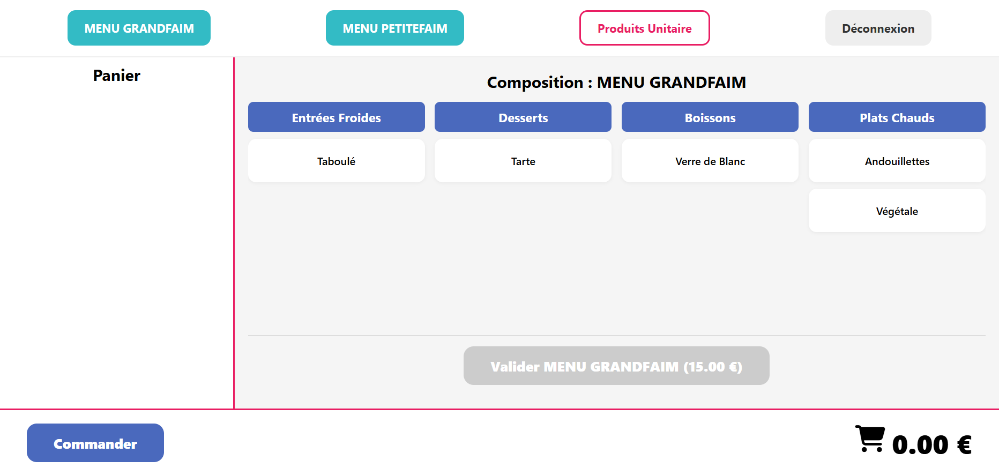
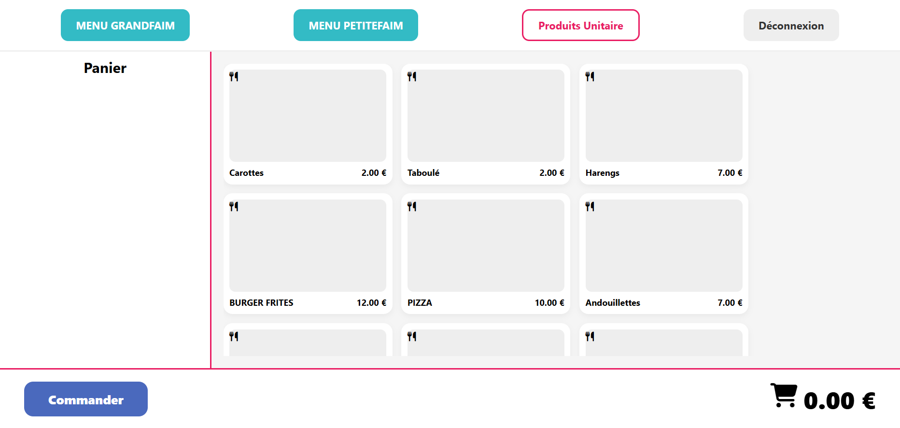
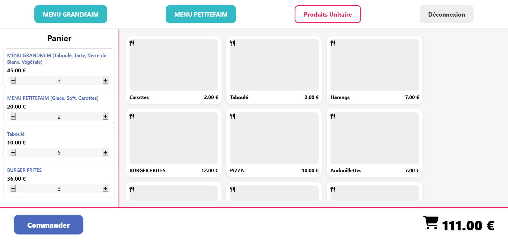
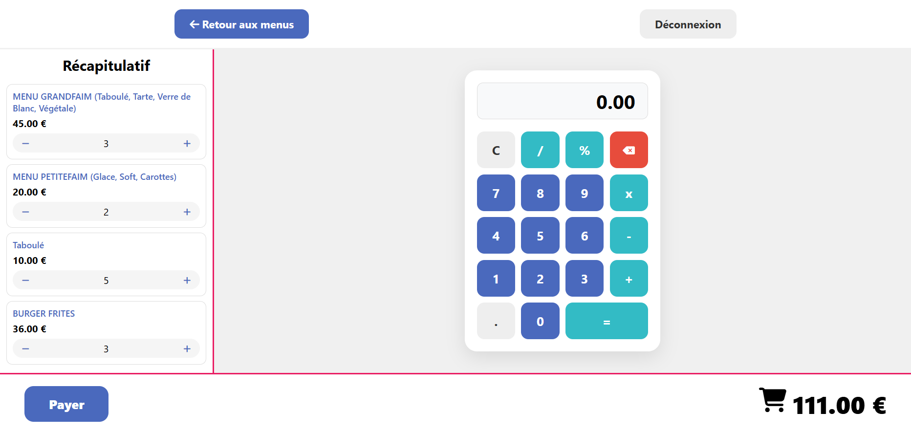
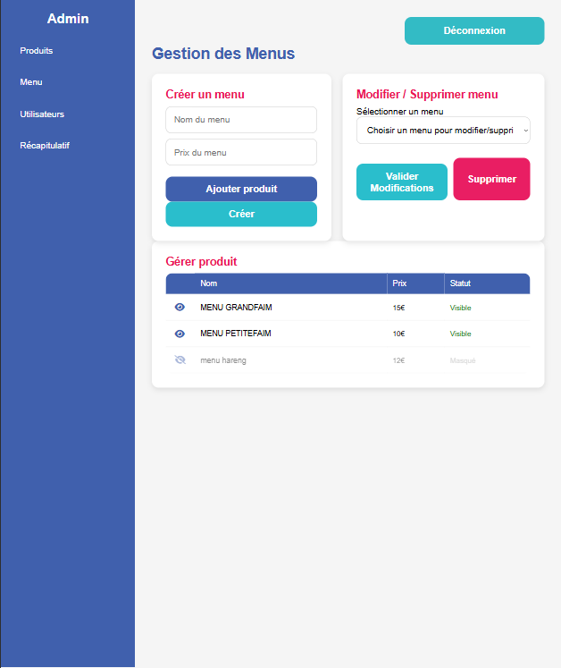
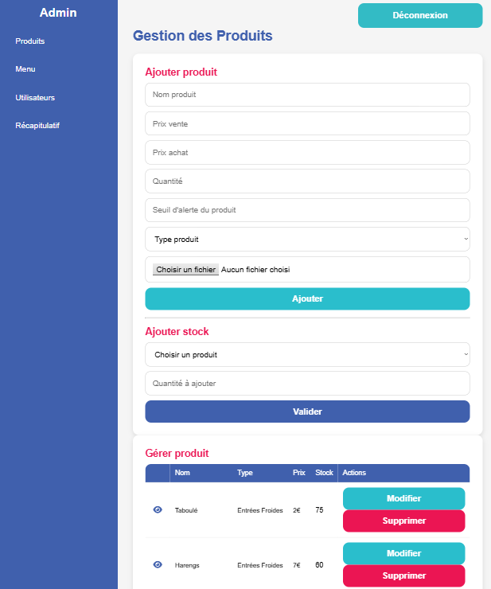
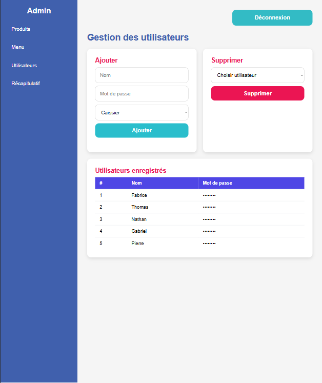
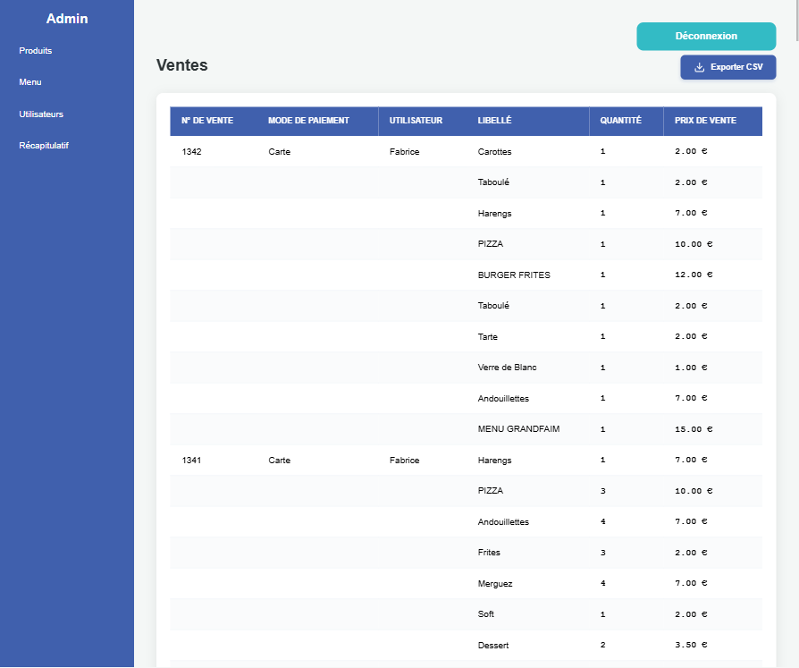

Application de prise de commande pour restaurant — gestion des menus, commandes et tickets thermiques.
CorsoFleuri est une application web de prise de commande inspirée des bornes McDo, développée pour un restaurant réel dans un contexte professionnel. Elle permet aux clients de composer leur commande depuis une interface tactile, pendant qu'en cuisine et en caisse, le back-office reçoit et imprime automatiquement les tickets thermiques.
Le projet a été réalisé en équipe de 4, avec une répartition claire des rôles : frontend, backend, base de données et intégration de l'imprimante thermique.








Le projet suit une architecture MVC côté serveur avec Node.js et Express :
Interface HTML / CSS / JS vanilla — affichage des menus, composition du panier, validation de commande.
Serveur Express avec routes REST — gestion des commandes, produits et catégories via l'API.
MySQL — tables produits, catégories, commandes et lignes de commande.
Intégration d'une imprimante thermique — génération et envoi automatique des tickets à la validation.